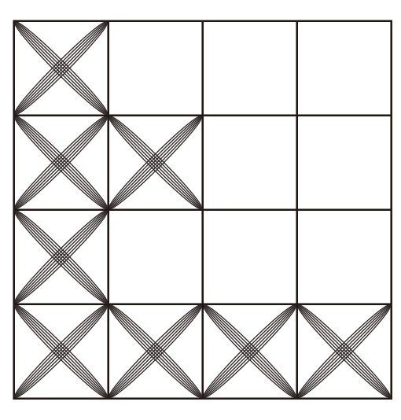
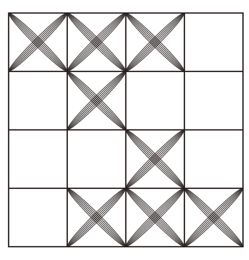
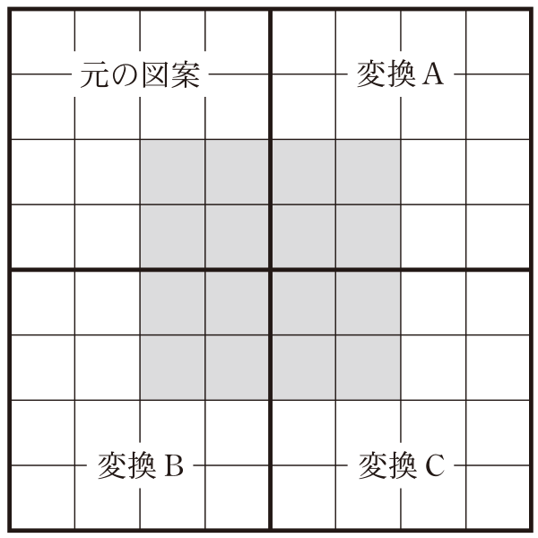
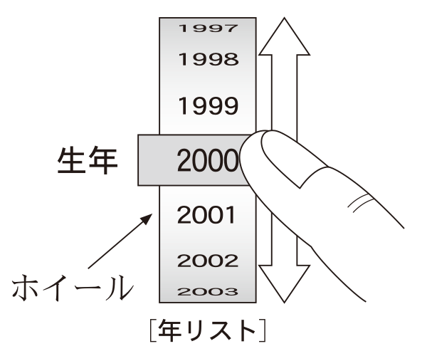
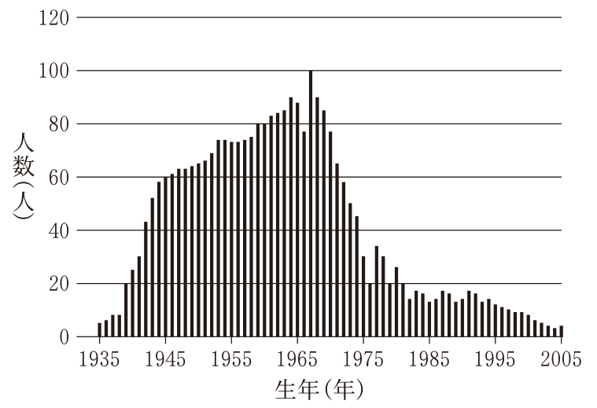
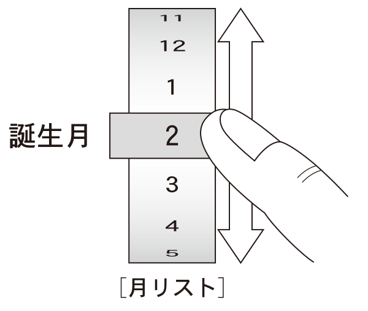
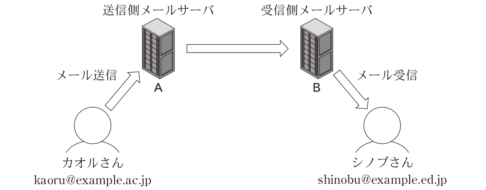

（全問必答）
第1問 次の問い（問1～4）に答えよ。（配点20）
問1 次の問い（a・b）に答えよ。
a 次の文章中の空欄 ア ・ イ に入れるのに最も適当なものを，後の解答群のうちから一つずつ選べ。
コンピュータの記憶装置は主記憶装置と補助記憶装置に大別される。一般に，主記憶装置に比べ，補助記憶装置はデータを読み書きする速度が ア であり， イ のために用いられる。
b 情報セキュリティに関する記述として最も適当なものを，次の⓪～④のうちから一つ選べ。 ウ
問2 次の文章を読み，空欄 エ ～ ケ に当てはまる数字または文字をマークせよ。なお，当てはまる文字がA～F の場合には，ⓐ～ⓕをマークすること。
M さんは家庭科の授業で，クロスステッチの刺繍を作成することになった。クロスステッチは，布上の格子の1マスに対して糸を「×」の形に縫う刺繍の方法である。刺繍の模様は，図1に示すような「図案」で表現される。
M さんは図案の作成にコンピュータを利用しようと考え，縫うマスを1，縫わないマスを0で表すことにした。図1の一番上の4マス（1行）は，2進法で表現すると4桁の10002になり，これを16進法で表現すると1桁の816になる。図1の4行分を続けて書くと，図1の図案は8C8F16という16進法での4桁で表現できる。この方式に基づいて，図2の図案を16進法で表現すると， エ オ 2716となる。


M さんは，図案の種類を増やすために，4×4マスの一つの図案に対する次のような変換方法を考えた。
続いて，小さな図案を組み合わせてより大きな図案を作るため，図3に示すように4×4マスの図案を4枚配置して8×8マスの図案を作ることを考えた。図3中の，変換A，変換B，変換C はいずれも元の図案に対して変換を行った結果とする。35AD16で表される図案を元の図案として，図3の方法で8×8マスの図案に拡張したとき，その中央の4×4マス（図3の網掛け部分）の図案を16進法で表現すると， カ キ ク ケ16となる。

問3 次の文章を読み，空欄 コ ・ サ に入れるのに最も適当なものを，後の解答群のうちから一つずつ選べ。
T 社では，あるサービスを展開している。そのサービスのスマートフォン専用のアプリを開発するにあたり，新規ユーザ登録の入力インタフェースとして，図4の生年の入力方法を考える。
図4では，年リストの中央に表示されている初期値は2000になっている。2008年生まれの人は，スクロール操作によりホイールを回転させ，リストの中央に2008を表示させることで入力する。この操作では，スクロールする移動距離（以下，スクロール距離と呼ぶ。）は8である。また，1997年生まれの人のスクロール距離は3となる。なお，年リストの上限は2100，下限は1900とし，それより上下にはスクロールしない。

生年の初期値について，直近1年間に登録されたユーザの生年データの分布（図5）をもとに検討する。表1に生年データの分布をもとに考えた生年の初期値の候補を示す。新規に登録するユーザの生年の分布は，直近1年間に登録されたユーザの生年の分布と変わらないと考えると，この分布に対してスクロール距離の平均ができるだけ小さくなるような初期値は，表1の中では生年データの コ である。
誕生月についても，図6に示すスクロール操作で入力することを考える。月リストはスクロールにより1周すると元に戻る。つまり，12の下は1，1の上は12である。新規ユーザの誕生月の分布に偏りがない場合，登録に要するスクロール距離の平均は，月リストの初期値を サ と考えられる。
なお，月リストをスクロールしても，入力済みの生年には影響しない。

| 代表値 | 生年 |
|---|---|
| 中央値 | 1961 |
| 最頻値 | 1967 |
| 範囲（1935～2005）の中央の値 | 1970 |
| 最大値 | 2005 |

問4 次の文章を読み，後の問い（a・b）に答えよ。
電子メールはさまざまな機器を経由して受信者に配信される。経由する機器は場合により異なるが，ここでは図7の概念図に示すように，カオルさん（kaoru＠example.ac.jp）がシノブさん（shinobu＠example.ed.jp）にメールを送ろうとするときに，送信側のメールサーバA と受信側のメールサーバB がかかわる場合を考える。

a カオルさんが，次に示す誤りの例あ～うのようにシノブさんのメールアドレスを間違えて送信したとき，配信途中のどこかでそのメールをシノブさんに届けられないことが検出される。あ～うのそれぞれの場合で，そのメールが届けられないことを最初に検出したサーバとその理由の組合せとして正しいものを，後の⓪～⑦のうちから一つずつ選べ。ただし，同じものを繰り返し選んでもよい。なお，誤って指定したsinobu という文字列に対応するユーザ名やドメイン名は存在しないものとする。exmple.ed.jp という文字列についても，同様とする。
誤りの例（下線部の文字列には綴りの間違いがある。）
| 例 | メールアドレス | 解答欄 |
|---|---|---|
| あ | sinobu＠example.ed.jp | シ |
| い | example.ed.jp＠sinobu | ス |
| う | sinobu＠exmple.ed.jp | セ |
| 選択肢 | サーバ | 理由 |
|---|---|---|
| ⓪ | A | 送信側のドメイン名が存在しない |
| ① | B | 送信側のドメイン名が存在しない |
| ② | A | 受信側のドメイン名が存在しない |
| ③ | B | 受信側のドメイン名が存在しない |
| ④ | A | ユーザ名が存在しない |
| ⑤ | B | ユーザ名が存在しない |
| ⑥ | A | 受信側のドメイン名とユーザ名の両方が存在しない |
| ⑦ | B | 受信側のドメイン名とユーザ名の両方が存在しない |
b 図7のメールを送る過程で用いられる通信先のIP アドレスを特定する仕組みとして最も適当なものを，次の⓪～③のうちから一つ選べ。 ソ